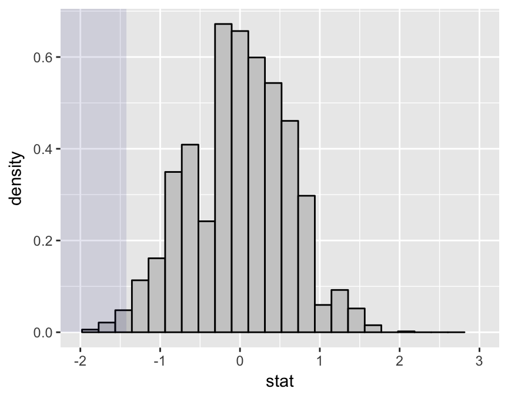

Five Reasons to Teach Elementary Statistics With R: Part 1
Introduction
This is is first in a projected five-part series of posts aimed at colleagues who teach elementary statistics.
I can’t remember exactly how I first made acquaintance with R, but it’s been an important part of my teaching/consulting life since at least 2007, when I used it for the first time in an upper-level undergraduate statistics class. As of last Fall all of our statistics classes—even the elementary ones—are based on R. We may never return to a ground-up GUI platform. If you teach with R but hesitate to spring such a powerful and complex tool on unsuspecting introductory students—many of whom whom will have had no prior experience with the command line, much less with coding—then I hope these posts will give you some encouragement.
Reason #1: Package mosaic
This package is a product of the NSF-funded Project Mosaic, led by Nick Horton, Daniel Kaplan and Randall Pruim. It’s on CRAN, but you might want to keep up with the very latest releases on Github:
require(devtools)
install_github(repo="rpruim/mosaic")mosaic aims to flatten the learning curve for elementary students by gentling down the coding aspects of the R experience. With mosaic:
- students need to know relatively few R-functions in order to thrive in the introductory course;
- many of the these functions are “wrappers” for standard R-functions, and provide a fairly uniform interface for user input;
- the package provides tools that mostly obviate the need for students to deal with R as a programming language:
- the students don’t have to write their own functions;
- they don’t need to think much about the different types of R objects;
- they don’t even need to learn about flow-control structures.
Keeping Simple Things Simple
R can make the easy stuff surprisingly tricky for beginners: suppose for example, that you want numerical summaries of a particular numerical variable, broken down by the values of some factor variable. Standard procedure in R would be to write your own anonymous function as an argument for aggregate(), thus:
aggregate(mpg~cyl,data=mtcars,
FUN=function(x) c(mean=mean(x),sd=sd(x)))## cyl mpg.mean mpg.sd
## 1 4 26.663636 4.509828
## 2 6 19.742857 1.453567
## 3 8 15.100000 2.560048mosaic skirts the problem by providing wrapper functions for aggregation:
require(mosaic)mean(mpg~cyl,data=mtcars)## 4 6 8
## 26.66364 19.74286 15.10000sd(mpg~cyl,data=mtcars)## 4 6 8
## 4.509828 1.453567 2.560048One can attain even more simplicity, at only a small cost in flexibility, by sticking to mosaic’s favstats() as a one-stop shop:
favstats(mpg~cyl,data= mtcars)## cyl min Q1 median Q3 max mean sd n missing
## 1 4 21.4 22.80 26.0 30.40 33.9 26.66364 4.509828 11 0
## 2 6 17.8 18.65 19.7 21.00 21.4 19.74286 1.453567 7 0
## 3 8 10.4 14.40 15.2 16.25 19.2 15.10000 2.560048 14 0Flow-Control for the Masses
mosaic includes powerful wrapper functions that permit extensive work with re-sampling and simulation, without the need to learn flow-control. Here follows a mosaic-style implementation of a permutation test.
Consider the data frame Pseudoscorpions from the abd package:
require(abd)
data(Pseudoscorpions)Pseudoscorpions contains the results of an experiment on 36 female Pseudoscorpions: each one was either mated twice with a single male (SM) or was mated with two males, one time each (DM), receiving about the same total amount of sperm under either treatment. The idea was to see whether an increase in genetic diversity of sperm sources increases the number of successful broods a female produces during her lifetime.
Here are some descriptive results:
favstats(successful.broods~treatment,
data=Pseudoscorpions)[c("treatment","mean","sd")]## treatment mean sd
## 1 DM 3.625 1.962142
## 2 SM 2.200 1.609184For the permutation test, we first compute and store the observed difference between the sample means:
obsDiff <- diffmean(successful.broods~treatment,
data=Pseudoscorpions)
obsDiff## diffmean
## -1.425Next, we create an empirical Null distribution with shuffle() (the random permutation function) and do() (a for-loop wrapper):
set.seed(12345)
nullDist <- do(2500)*(
diffmean(successful.broods~shuffle(treatment),
data=Pseudoscorpions))Finally, we call statTally() for numerical and graphical analysis of the results:
statTally(obsDiff,nullDist)## Null distribution appears to be asymmetric. (p = 0.000258)##
## Test statistic applied to sample data = -1.425##
## Quantiles of test statistic applied to random data:## 50% 90% 95% 99%
## 0.0375 0.8250 0.9375 1.3875## ##
## Of the 2501 samples (1 original + 2500 random),##
## 12 ( 0.48 % ) had test stats = -1.425##
## 40 ( 1.6 % ) had test stats <= -1.425## Warning: Removed 1 rows containing missing values (geom_bar).
We seem to have fairly strong evidence (\(P \approx 1.7\%\)) that mating with more males increases the number of successful broods.
There is Much More
I have only scratched the surface of the mosaic package, which is rich enough to support statistics instruction in both elementary and advanced courses. The mosaic authors provide extensive instructor resources in the package vignettes, and frequently offer workshops and short-courses, especially through events sponsored by the Consortium for the Advancement of Undergraduate Statistics Education.
Next week I’ll introduce a supplementary package that is intended for students who might require even more simplicity, and that aligns their R experience with a particular set of teaching objectives.
References
The Pseudoscorpion experiment is discussed in Whitlock and Schluter’s The Analysis of Biological Data (Roberts and Company Publishers; First Edition, 1st Edition July 2008).